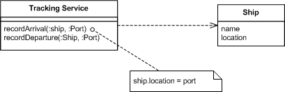
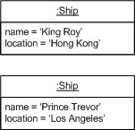

Intro to Event Sourcing
- common pattern in most applications: only current state of domain object
- traditional CRUD model doesn't scale with data-rich highly concurrent systems
- Reasonably sized applications can not scale with sync req/resp style
- what ES is: capture all changes to an application state as sequence of event objects
Intro to Event Sourcing
- is balance a static column or is it a cumulative result
- your application's current state is the left fold of the past behaviours
- application state is temporal but your events are immutable facts
- no 2PC
What ES offers
- EDA - events as first class citizen
- Natural audit logging
- Temporal queries
- Scalability - writes and reads decoupling & loose coupling between components
Available EDA options
- Event Notifications
- Event-carried State Transfer
- Event Sourcing
Event Notification
- send event messages to notify other systems of a change in its domain
- just enough information for other systems to go back and talk with source system
- may result in chatty systems
Event-carried State Transfer
- send event messages with as much information about the change in its domain
- often receivers don't need to come back to source system to act on the change
- possible unnecessary data duplication and transfer
- versioning gets harder
Event-carried State Transfer
Event Sourcing
- Any change gets recorded as event object
- we can confidently rebuild the system state by reprocessing the events at any time in the future
- event store is your source of truth
- git
Event Sourcing Example


Event Sourcing Example


Challenges
- Event Store
- Event replaying over continously changing system eg. shape of events change
- High storage requirement for events
- CQRS
- Eventual Consistency